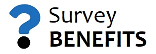

Estados claros ajudam a recuperar o acesso sem ambiguidade.
Estado de acesso
Ligação expirada.
Esta ligação já foi utilizada ou ultrapassou o período de validade.
Peça uma nova ligação de acesso. A anterior ficará automaticamente inválida.
Pedir nova ligação